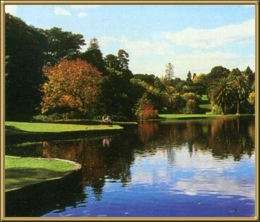

The Royal Botanic Gardens here in Melbourne are exceptionally beautiful and a perfect place to feed the swans! They were begun by my nephews great-grandfather, Baron Von Mueller and there is a statue of him in the gardens.
Photographer: Unknown